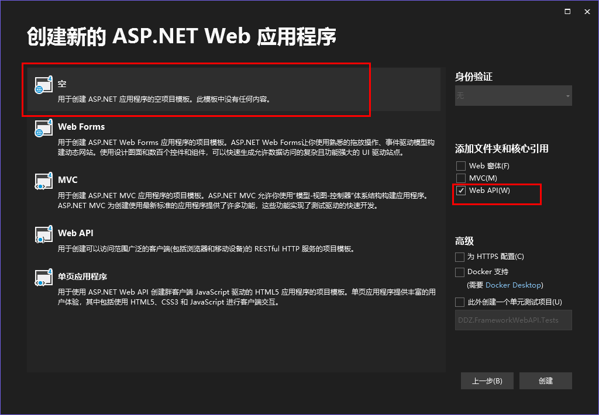

整理记录一些
这里不是重点，就不直接展开了，要是想看……

新建完成之后，你可以直接运行项目。但是结果可能不是你想要的……
咱们选的是空模板，啥也没有就正常了。
这个项目到目前为止还没有添加任何静态文件，也就没有什么默认页面。那么对于
public static void Register(HttpConfiguration config)
{
// ……
// 添加“根节点”路由
config.Routes.MapHttpRoute(
name: "RootNode",
routeTemplate: "",
defaults: null,
constraints: null,
handler: new RootNodeRouteMessageHandler()
);
}
////// 根路由消息处理程序 /// 参考：https://learn.microsoft.com/zh-cn/aspnet/web-api/overview/advanced/http-message-handlers /// public class RootNodeRouteMessageHandler : DelegatingHandler { protected override TaskSendAsync(HttpRequestMessage request, CancellationToken cancellationToken) { var response = request.CreateResponse(System.Net.HttpStatusCode.OK); response.Content = new StringContent("这你都发现了……"); return Task.FromResult(response); } }
public class SimpleTypeController : ApiController
{
#region 布尔类型
[HttpGet, Route("api/SimpleType/TestBool1")]
public bool TestBool1()
{
return true;
}
[HttpGet, Route("api/SimpleType/TestBool2")]
public bool TestBool2()
{
return false;
}
#endregion
#region 数值类型
[HttpGet, Route("api/SimpleType/TestInt")]
public int TestInt()
{
return 666;
}
#endregion
#region 字符串类型
[HttpGet, Route("api/SimpleType/TestString")]
public string TestString()
{
return "我爱你中国";
}
#endregion
#region 时间类型
[HttpGet, Route("api/SimpleType/TestDateTime")]
public DateTime TestDateTime()
{
return DateTime.Now;
}
#endregion
#region 自定义实体类
public class PersonModel
{
public string Id { get; set; }
public string UserName { get; set; }
public string Password { get; set; }
}
[HttpGet, Route("api/SimpleType/TestClass")]
public PersonModel TestClass()
{
return new PersonModel()
{
Id = "1",
UserName = "xiaodu114",
Password = "zhelishimima……",
};
}
#endregion
}
这里你会发现该API项目默认返回的
// 方式0
// API方法级别的控制。方法返回：HttpResponseMessage 并设置 Content-Type
// 方式1
config.Formatters.Clear();
config.Formatters.Add(new JsonMediaTypeFormatter());
// 方式2
config.Formatters.Remove(config.Formatters.XmlFormatter);
// 方式3
config.Formatters.XmlFormatter.SupportedMediaTypes.Clear();
// 方式4 config.Services.Replace(typeof(IContentNegotiator), new JsonContentNegotiator(new JsonMediaTypeFormatter())); ////// JSON内容协商 /// 参考：https://www.cnblogs.com/acles/archive/2013/06/21/3147667.html /// public class JsonContentNegotiator : IContentNegotiator { private readonly JsonMediaTypeFormatter _jsonFormatter; public JsonContentNegotiator(JsonMediaTypeFormatter formatter) { _jsonFormatter = formatter; } public ContentNegotiationResult Negotiate(Type type, HttpRequestMessage request, IEnumerableformatters) { var result = new ContentNegotiationResult(_jsonFormatter, new MediaTypeHeaderValue("application/json")); return result; } }
在测试API返回实体类时（例如：人员实体），返回的属性名称首字母都是大写的。这对前端不是很友好……
config.Formatters.JsonFormatter.SerializerSettings.ContractResolver = new CamelCasePropertyNamesContractResolver();
注意：默认返回JSON的几种处理方式，方式1、2、3结合上面的代码都可以实现首字母小写。方式0没有测试。方式4不行。